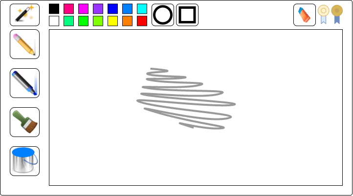
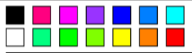

Welkom op de site voor het spel Tover Tekenen
Dit spel gaat over de kunszinnige oriëntatie van kinderen doormiddel van beeldende vorming. In dit spel leren kinderen gebruik te maken van verschillende materialen en technieken, oftewel 'tools', zoals potloden, stiften en andere hulpmiddelen.
Dit spel is gemaakt voor kinderen uit groep 1 en 2. Dit zijn dus kinderen tussen de leeftijden van 3 t/m 5. Omdat kinderen tussen de 3 en 5 jaar oud nog niet goede leesvaardigheid hebben zal de game zeer visueel ontworpen worden. Ook wordt er audio aan toegevoegd.
Het doel van dit spel is om kinderen te leren gebruik te maken van verschillende materialen om hun kunstzinnige oriëntatie te verbeteren. Ze kunnen bijvoorbeeld een potlood gebruiken, maar ook een stift of een kwast om op een canvas te tekenen.
Dit spel straft je niet heel zwaar als je iets verkeerd doet. Dit spel is gemaakt om het kind te laten oriënteren in hun creatieve vaardigheden dus je wordt een stukje eerder teruggeplaatst waar je was en dan wordt je erop gecorrigeerd wat wel moet doen.
De leerstof wordt samen met een thema in het spel verwerkt om het op die manier interessanter te maken. Dit wordt gedaan omdat zonder thema het spel veel saaier en minder interessant wordt om te ervan te leren. De gameplay van het spel werkt daarom op deze manier.
Je speelt als een tovenaar die wilt leren gebruik te maken van de verschillende materialen oftewel "tools" om mee te kunnen tekenen. Deze materialen kunnen bijvoorbeeld potloden zijn, maar het kunnen ook stiften, kwasten of andere materialen zijn die je gebruikt om op een canvas te tekenen.
Zoals je eerder hebt gelezen kun je uit verschillende materialen kiezen om te gebruiken. In elk level van het spel wordt er weer een nieuw materiaal of techniek getoont die je kunt uitproberen. Na elk level zul je het nieuwe materiaal ook kunnen gebruiken.
Wanneer je nieuwe materialen krijgt om te gebruiken wordt je aangemoedigd om ze te gebruiken door een muziekje af te spelen wanneer ze worden gebruikt in het volgende level. Dan komt er rechtsbovenaan ook een gouden medaille te staan om aan te geven dat je gebruik maakt van de nieuwe materialen die je zijn gegeven.
Hier zal ik laten zien hoe de UserInterface (UI) van het canvas eruit zal zien. Hier ziet u dan ook op welke manier de UI invloed heeft op de leerstof dat in het spel is verwerkt.
Dit is hoe de UI eruit ziet. De game heeft verschillende materialen, zoals een potlood, stift of kwast. Ook heeft het een gum voor het weghalen van tekeningen.
Dit zijn de kleuren waaruit je kunt kiezen om mee te tekenen. Hiermee kun je van kleur wisselen en verschillende kleuren gebruiken op het canvas.
Dit zijn medailles die je krijgt voor het gebruiken van materialen of technieken uit het vorige level. Als je in het vorige level bijvoorbeeld cirkels hebt geleerd en ze in het huidige gebruikt, krijg je een muziekje te horen en verandert één van de vaaggekleurde medailles naar een duidelijke kleur.
Dit zijn vormen die je kunt gebruiken in je canvas. Dit zijn de verschillende technieken die je kunt toepassen in je canvas-creatie.
Als u contact wilt opnemen kunt u mij bereiken via mijn e-mail: 1037084@hr.nl
Ik heb alle afbeeldingen zelf gemaakt.
De leerstof komt van het onderwijsconsument, onder het kopje Kunstzinnige oriëntatie